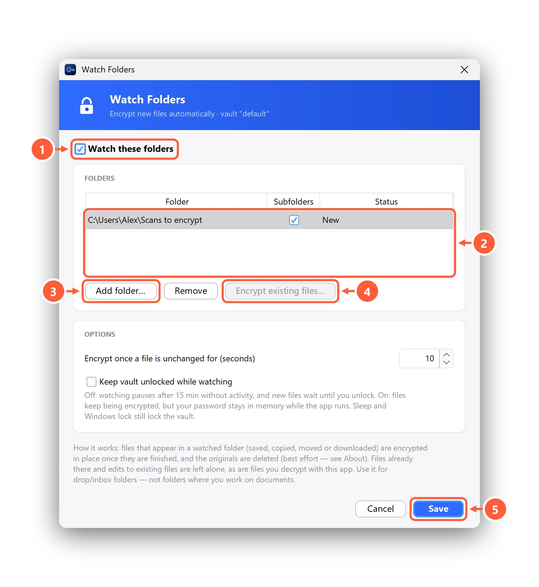

Encrypt new files automatically with watch folders
A watch folder is an inbox: every new file that lands in it — a scan, a download, a photo from your phone — is encrypted automatically once it's finished being written.

- Turn watching on
- Folders Clavis watches
- Add a folder — new files in it are encrypted automatically
- Encrypt what's already in it
- Save to start watching
How it behaves
- A file is encrypted once it has been unchanged for the number of seconds you set (10 by default), so half-copied files are never touched.
- Files already in the folder are left alone — press Encrypt existing files… to do those too.
- Edits to existing files, and files you decrypt with Clavis, are left alone.
- Watching pauses after 15 minutes without activity and when the vault locks; new files wait until you unlock. Tick Keep vault unlocked while watching to keep going (your password then stays in memory while Clavis runs; sleep and locking Windows still lock the vault).
- Closing the window with × keeps Clavis — and watching — running in the tray.
Use it for inbox folders, not for folders where you're actively working on documents —
a file you're still editing would be encrypted as soon as you stop for a few seconds.
Shortcut: right-click a folder in File Explorer → Clavis → Add to Watch Folder.
Can't find what you need? All help articles · Email us